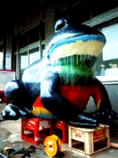
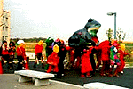
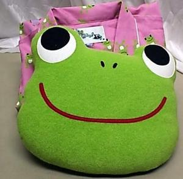
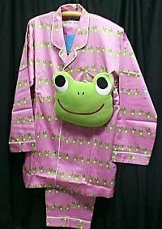

|
学園祭に巨大カエル御輿！引取先を募集中！ 【日本発=タダ同志記者】我が家にも入り切らぬほど巨大なカエルを作ってしまいました。そしてあげく御神輿にして先週学園祭で練り歩いたのです。でも学園祭が終了したら、学校から今月中には（しかもなるべく早めに）どかしてください、と言われてしまいました。うちの庭にも入ると言えば入るのですがカエルがきたらほかに全くだれもひとが入れない様な状況だもんで、もし買い上げてくれる方があればそれがなによりと思い、買ってくれる人を捜しています。
お庭番に巨大カエルいかが！ 世界に一つしかない巨大カエルみこし。幼稚園や小学校にお勤めの方、いかがでしょう？運動会などで盛り上がること必至！広いお庭をお持ちの方！お庭番に巨大カエル！どうでしょうか。みこしとカエルは今から取り外すことはできますがなるべくならセットでお譲りしたいです。ともあれ！ひとつうちのホームページに遊びに来てください。詳しいことが載ってますし私の作ったカエルのきぐるみケロイもいます。それではみなさんよろしくお願いいたします。」
女子製作では世界最大級カエル！その名も「hitomi」！【全国かえる奉賛会】さっそくページを見た！ジャンボガエル作品「威風堂々」が原題で、あまりのでかさに行き場無し！日の目を見せるためにオミコシにしたそうです。名前は「hitomi」。みんなもhitomiみたいに可愛い女になるようにっ！だそうだああああ。
これはすごい！しかも女子だけで作り上げたカエル築造物としては世界最大級のカエルであろう！ぜひとも、このまま保存してもらい、来年の博多どんたくに出場してもらいたいものである。
カエル寝間着まくら付き！かえるグッズ購入ページ発見！ 【日本発かえらーまき同志記者】最近、私は流行のネットオークションにはまっています。そのなかで「楽天」というネットオークションのページがありますがここではオークションのほかに共同購入という企画もありましてみんなで集まって買うと価格が安くなるというものです。その中でこんなかわいいかえるグッズの共同購入ページを見つけたのです。  スタート価格３９００円ですが、１０名以上集まると１５００円になります。まだおひとりしか申込がありません。（１１月１０日現在）これではかえらーのメンツが立ちませんよね。全国のかえらーのみなさんに、かえらーの意地とメンツとプライドをかけて３０個完売目指して参加していただきたいと思ったのです。決して出店してるお店の回し者ではありません。 よろしくお願いします。
【全国かえる奉賛会】ページによると、商品は、かえるボーダー柄パジャマ【枕付】というそうだ。定価３９００円が１５００円に！サテン生地のコットン100％素材。プチ枕おまけ付。素材は綿１００％なのでお肌にも優しいぞ！もーこれは買うしかないな！大王もさっそく申し込みしてくるぞー。 通貨はカエル！かえっこショップに急げ！１９日に福岡大名でも開設 【福岡発お米のかえるの藤浩志同志記者】近年、というより今年の春より「かえっこショップ」という「かえるポイント」が通
貨となるぶつぶつ交換のお店をいろいろな所で展開しております。
【福岡発お米のかえるの藤浩志同志記者】近年、というより今年の春より「かえっこショップ」という「かえるポイント」が通
貨となるぶつぶつ交換のお店をいろいろな所で展開しております。ぶつぶつ交換のプロジェクト貨幣としてかえるのスタンプを用い、「かえるポイント」として子どもたちが持ち寄ったおもちゃやアクセサリーの不要品を「かえるポイント」に変換、それでお店に並ぶ子どもたちの不要品のおもちゃ類が購入できるというお金不要のドリーム世界を創り出すことが目的のです。 でその「かえっこショップ」が１１月１９日に福岡市中央区大名のキキプレイスに2時間だけオープンします。大阪のデジハンというインターネットはんこ屋で作られたかえるのはんこがその通貨となり「かえっこカード」に押されそれで買い物ができるのです。
現在韓国のプサンでもそのショップは美術館の中ですがオープン売る予定です。「かえっこショップ」のキャラクターは、あの「かえる展」で誕生した木彫のかえる君がです。カエラーのみなさんも行ってみましょう！ 
イズノスケ今季で引退か！【東京発みーしゃ同志記者】いつもかえる新聞を愛読しております。先日、静岡県観光連盟の方とお話ししていたら、伊豆観光のマスコット、かえるの「イズノスケ」君が間もなく引退するそうです。来年からは、東海道400年キャンペーンが始まるので新キャラクターを開発中とのこと。今のうちに静岡県観光連盟本・支部（東京では有楽町駅前交通会館内にあります）で「イズノスケ」グッズをゲットしよう！デザインフェスタにカエル物で出品！【東京発たけお同志記者】今度デザインフェスタにカエル物で出品します。今度は新シリーズ、かえるのエドくんがでる予定です。もし良かったら取り上げていただけると嬉しいです。場所は、国際展示場東京ビックサイト西3.4ホールブースNo.C-52。日時は、11月18日（土）11月19日（日）時間は、am11：00〜pm7：00。料金は前売800円（チケットぴあ）当日1000円です。きみの彼氏は何カエル？！【福岡発とみか様】相撲ファンの私です。力士は美形！ぶ男好きな大王様とは違うのよーん！！今日の大相撲ダイジェスト、解説は相撲界の松平健＝旭豊でした。あの人、引退してたんだ。別にタイプじゃないけど。すもーとは関係ないですが、これ、発見。
投稿採用者に武功カエル徽章を授与！ |
かえる古新聞過去に取り上げた記事を見出し付きで一覧したい人は、ここをクリック◆創刊号を見る◆先週号を見る◆話題の号を見る◆かえる新聞の昔を読む◆COOL NET FROG RANKING !
|
私も入っています。。全国かえる奉賛会
大王様に会うには、このバナーをクリック。ずっと奥に写真館があるぞ。全国かえる奉賛会に入会するには、自分のホームページのどこかに、下の部分を追加するとバナーがリンク付きで表示されるぞ。どんどん入会しましょー |


|